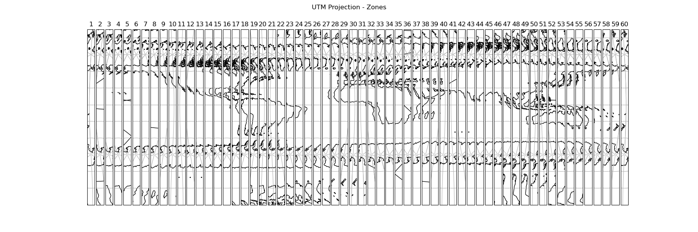

Note
Click here to download the full example code
Displaying all 60 zones of the UTM projection#
This example displays all 60 zones of the Universal Transverse Mercator projection next to each other in a figure.
First we create a figure with 60 subplots in one row. Next we set the projection of each axis in the figure to a specific UTM zone. Then we add coastlines, gridlines and the number of the zone. Finally we add a supertitle and display the figure.
import cartopy.crs as ccrs
import matplotlib.pyplot as plt
def main():
# Create a list of integers from 1 - 60
zones = range(1, 61)
# Create a figure
fig = plt.figure(figsize=(18, 6))
# Loop through each zone in the list
for zone in zones:
# Add GeoAxes object with specific UTM zone projection to the figure
ax = fig.add_subplot(1, len(zones), zone,
projection=ccrs.UTM(zone=zone,
southern_hemisphere=True))
# Add coastlines, gridlines and zone number for the subplot
ax.coastlines(resolution='110m')
ax.gridlines()
ax.set_title(zone)
# Add a supertitle for the figure
fig.suptitle("UTM Projection - Zones")
# Display the figure
plt.show()
if __name__ == '__main__':
main()
Total running time of the script: ( 0 minutes 38.711 seconds)